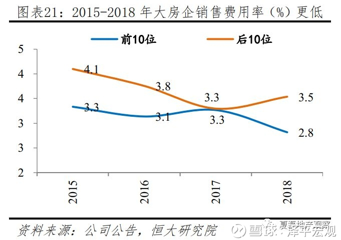
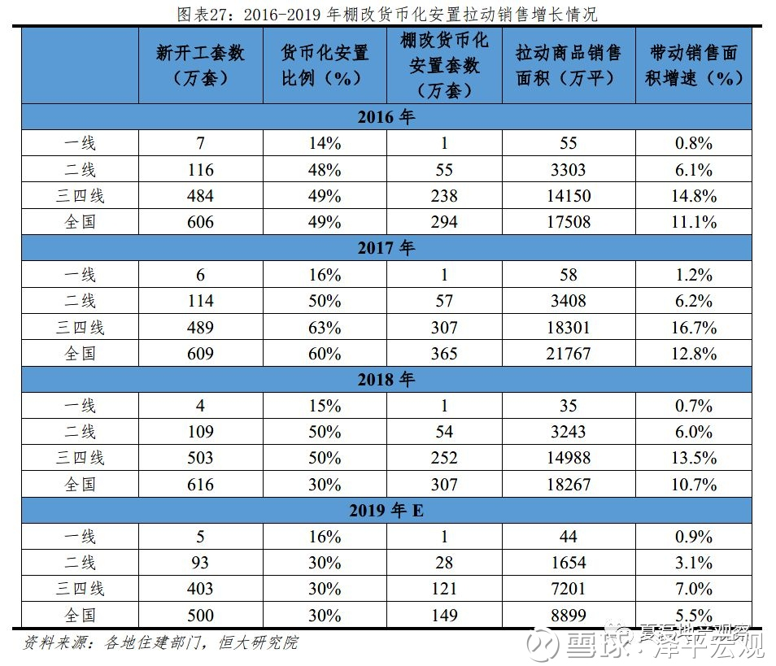
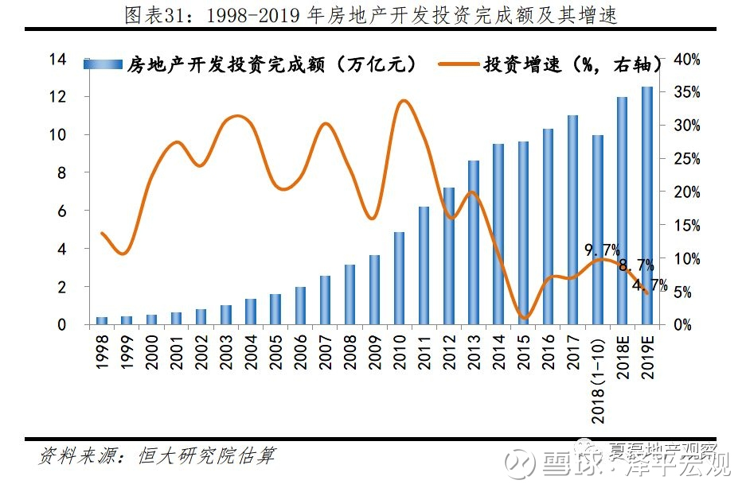
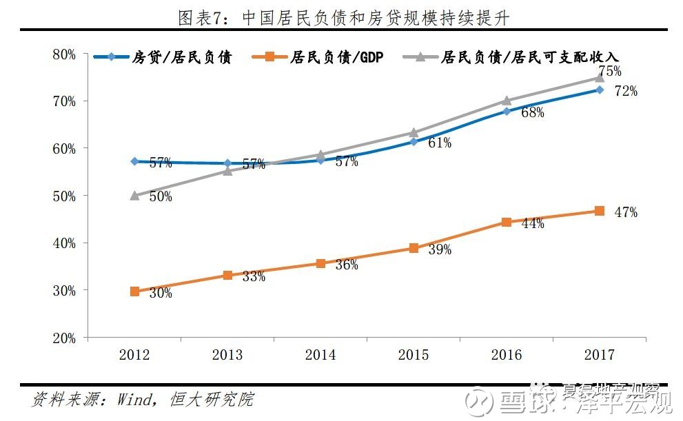
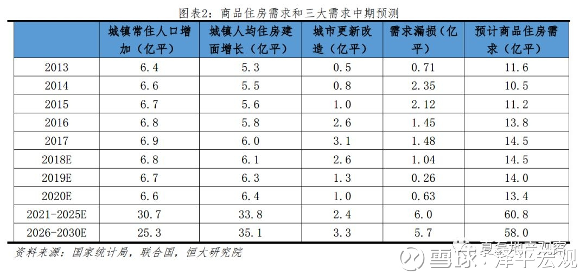
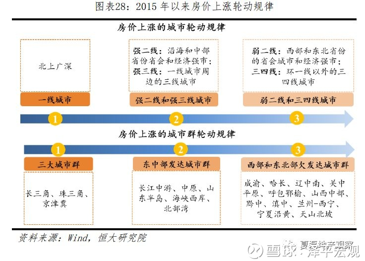
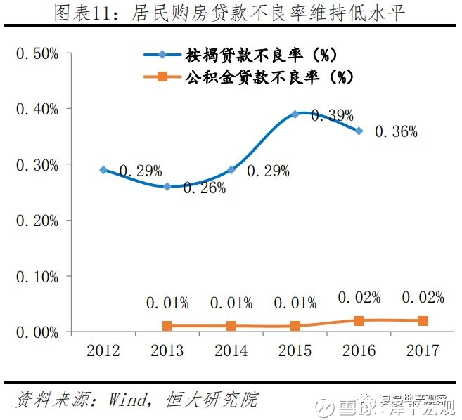
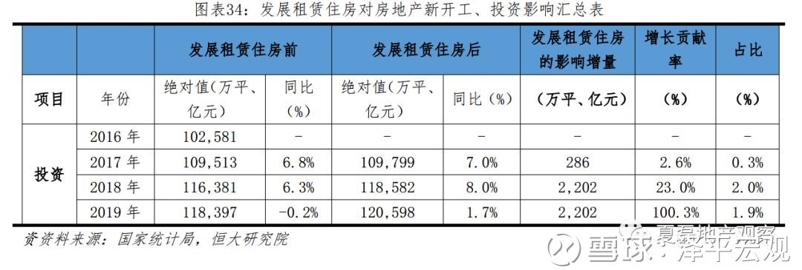
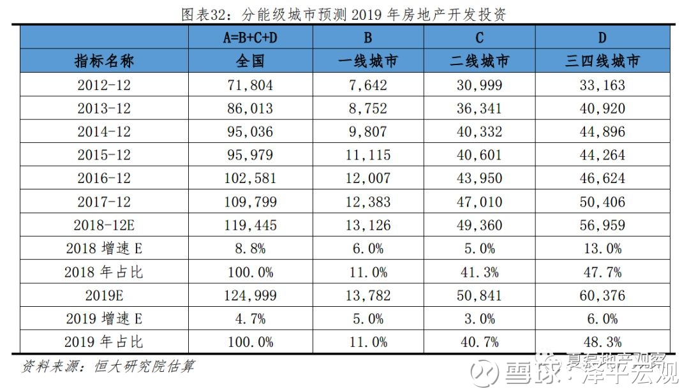
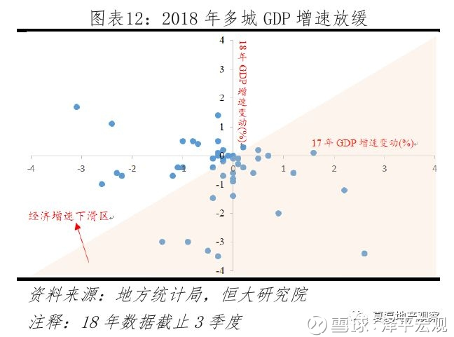

所有人都在赌明天
富人用錢生錢，窮人用命賭未來，中產為下一代焦慮。三個階層，三種焦慮，同一個中國。
從 399 個思想碎片中合成 20 篇隨筆散文 · 2026 年 3 月整理

富人用錢生錢，窮人用命賭未來，中產為下一代焦慮。三個階層，三種焦慮，同一個中國。

階層不再是硬性的門第，而是軟性的選擇。你可以選擇躺平，也可以選擇奮鬥，但結果早已註定。

FOMO 是資源稀缺恐懼症。演化史決定了倖存人群的 FOMO 傾向，但豐盛者可以說不。

交易不是預測未來，而是管理風險。真正的交易高手，都是風險管理大師。

權力不是讓你做什麼，而是讓你聽話。這是權力的本質，也是人性的試煉場。

當你不再為別人的掌聲而活，你的人生才真正開始。
1933 年的東京，娛樂被政治化，生活被意識形態化。歷史總是驚人的相似。
中國房地產已經觸及天花板，黃金融時代正式落幕。下一個週期在哪裡？

坂本龍一、張小濤等大師的人生智慧。這些雞湯，只有長大後才懂。
從鴉片戰爭到 1975 年駐馬店大水，歷史不會忘記，但很多人會選擇遺忘。
投資依賴的所有信息都是關於過去的，而投資的所有判斷都是關乎未來的。

我們以為的自由，可能只是被精心設計的選擇。生活的真相，往往藏在錯覺背後。

當你開始觀察一朵花的開放，一幢樓的拆遷，一個人的成長，時間就會為你停留。
富人排隊離婚，窮人排隊跳樓，中產排隊落戶。三個階層，三種焦慮，同一個中國。

世界沒有真相，只有你的視角。你看到什麼，取決於你站在哪裡。
銷售的本質不是說服，是信任。客戶買的不是產品，是信任你這個人。
溝通不是說話，是理解。先理解對方的需求，再表達自己的想法。
知識是觀察，是記錄，是傳承。不是迷信，不是盲從，不是人云亦云。
反對中醫和武功，但支持農曆。因為農曆是觀察自然的結果，中醫是想象自然的結果。